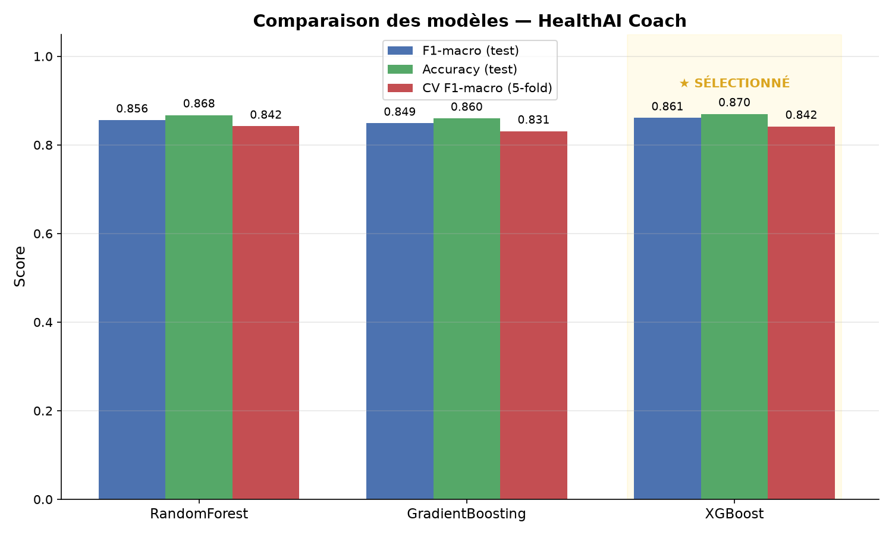
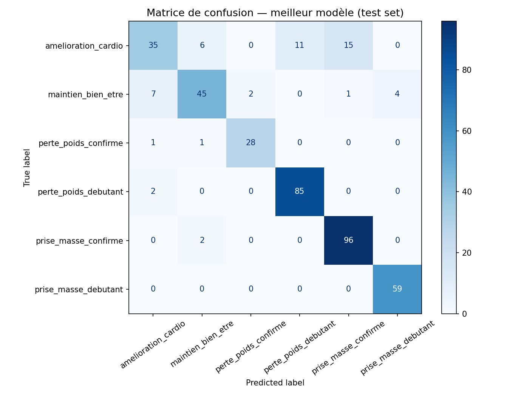
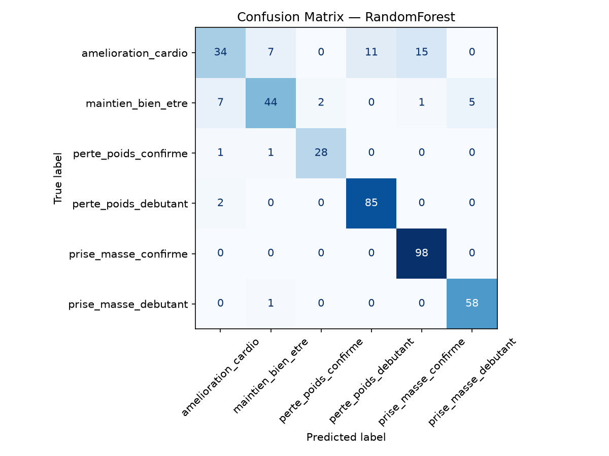
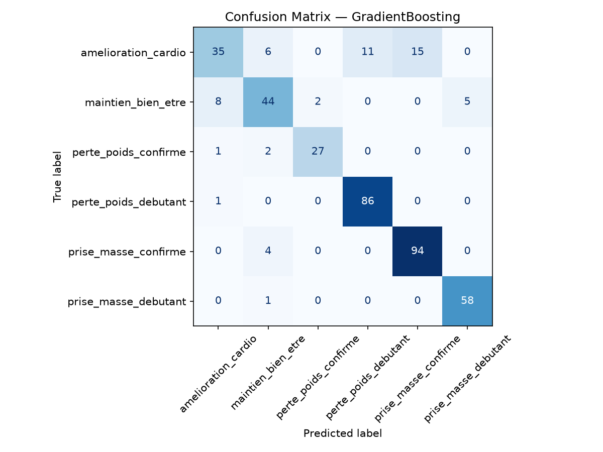
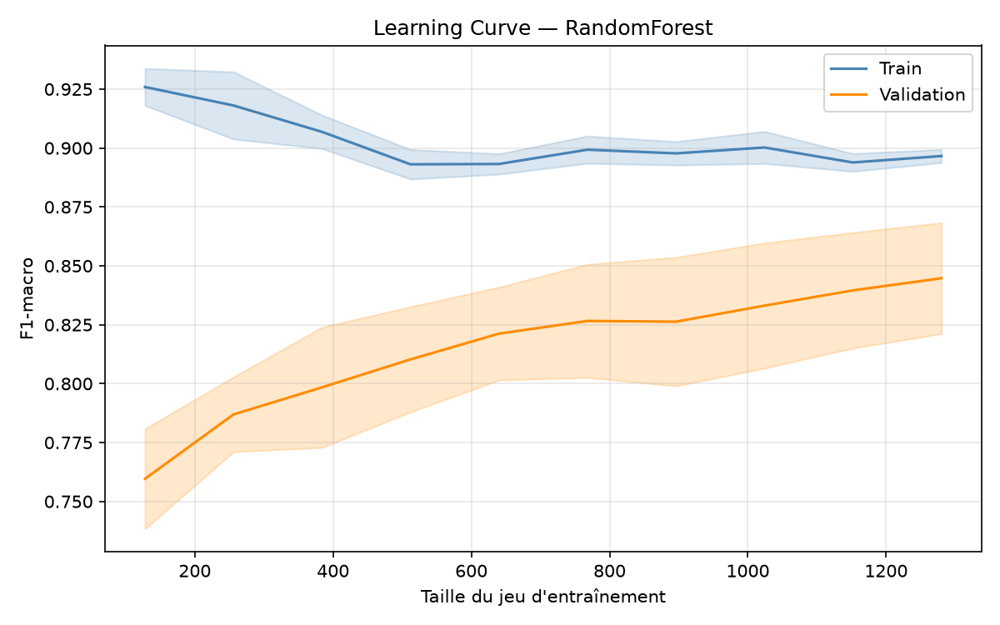
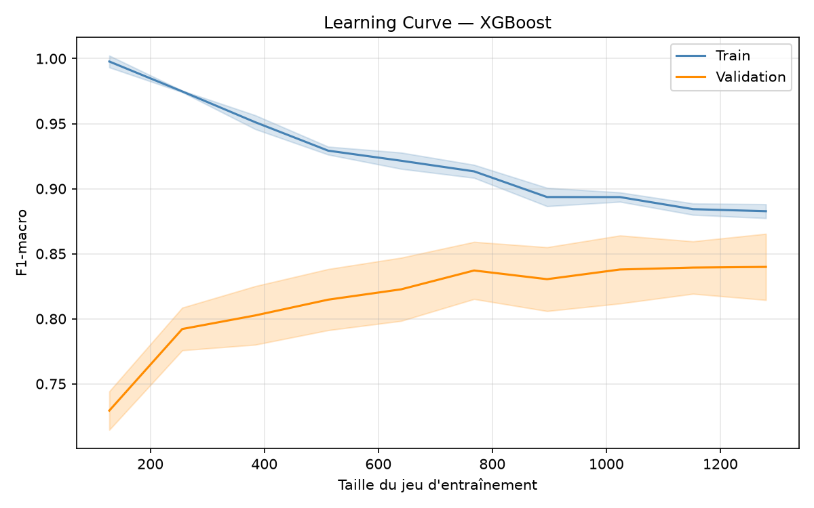
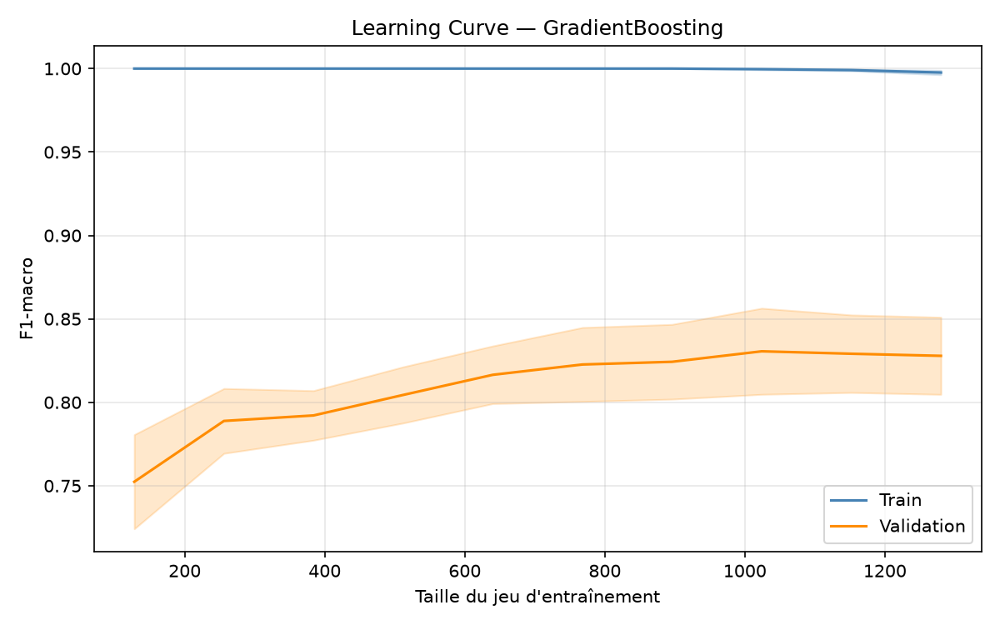
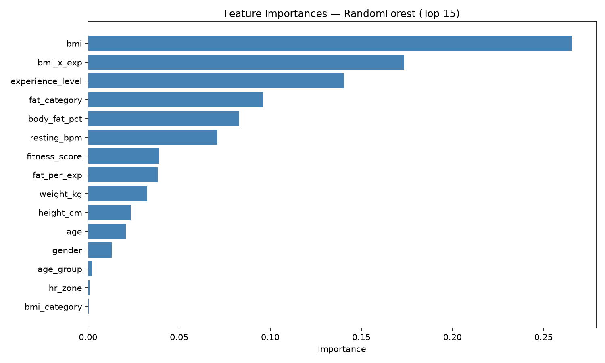
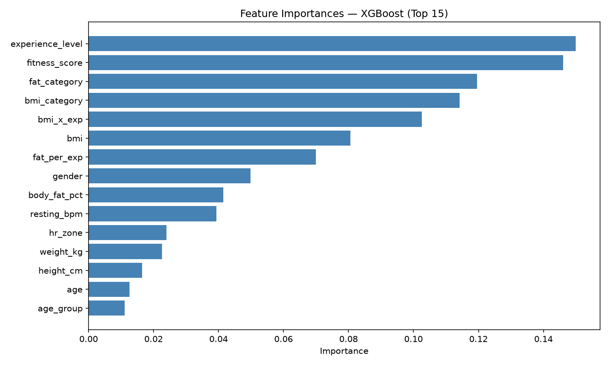
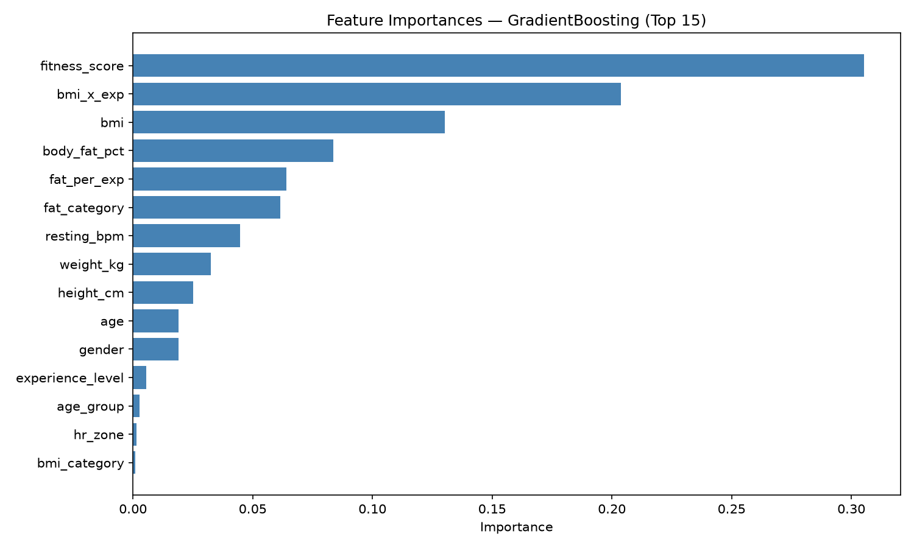

HealthAI Coach
Système de recommandation de programmes sportifs personnalisés par Machine Learning.
À partir de 8 mesures biométriques recueillies à l'inscription, le système prédit le profil
fitness de l'utilisateur et lui recommande un programme sportif complet et personnalisé.
Présentation du projet
Le projet HealthAI Coach répond à une question concrète : lorsqu'un utilisateur s'inscrit sur une application fitness, il fournit des informations basiques — son âge, son poids, sa taille, son niveau d'activité physique. Est-ce qu'on peut, uniquement avec ces données, lui recommander automatiquement le programme d'entraînement le plus adapté à sa situation, sans intervention humaine ?
L'idée est de créer un moteur de recommandation intelligent qui va classifier chaque nouvel utilisateur parmi 6 profils fitness distincts, chacun correspondant à un objectif et un programme différent. C'est un problème de classification supervisée multi-classes.
Les 6 profils fitness
1. Perte de poids — Débutant
Programme cardio modéré (zone 2, 55–65% FCmax) + renforcement léger. Objectif : perte de 0.5 kg/semaine sur 8 à 12 semaines. Progression douce — le corps n'est pas habitué à l'effort.
2. Perte de poids — Confirmé
HIIT + musculation pour un remodelage corporel (perdre du gras, conserver le muscle). Le corps peut supporter des intensités élevées. Effet afterburn exploité pour brûler plus de calories après la séance.
3. Prise de masse — Débutant
Exercices fondamentaux (squat, développé couché, rowing) à 65–75% du maximum. Progression linéaire : +2.5 kg par séance. Surplus calorique modéré de 200–300 kcal/j, protéines à 1.8 g/kg.
4. Prise de masse — Confirmé
Programme split push/pull/legs, périodisation ondulante (semaines force / semaines hypertrophie). La créatine monohydrate (5 g/j) est recommandée — niveau de preuve A (méta-analyses solides).
5. Amélioration cardio-vasculaire
Entraînement polarisé : 80% basse intensité (zone 2) + 20% haute intensité (zone 4-5). Objectif : faire descendre le BPM de repos de 5–10 battements en 8 semaines et développer le VO2max.
6. Maintien et bien-être
Tous les indicateurs dans les normes. Programme varié (yoga, jogging léger, renforcement fonctionnel) axé sur la régularité, le plaisir et la prévention du déconditionnement.
Architecture globale du pipeline
Le projet est organisé en deux grandes parties indépendantes qui communiquent via l'API : le pipeline ML (entraînement, évaluation, sauvegarde) et l'API de production (prédiction, BDD, Firebase).
Pipeline ML — de la donnée au modèle
2000 lignes
exploration
nettoyage
7 features
scale + encode
50 iter × 5 folds
Joblib
Architecture de production — double base de données
8 mesures
/recommend
XGBoost
repas + séances
logs prédictions
PostgreSQL — Railway
Base de données relationnelle hébergée sur Railway. Contient les données structurées : exercices, séances d'entraînement, repas. Schéma "Data".
workout_exercises— 43 exercicesworkout_sessions— 21 séances (3-4 par profil)session_exercises— 110 liens séance/exercicemeals— repas adaptés par profil
Firebase Firestore — NoSQL
Base de données documentaire Google. Contient les logs de prédictions et les retours utilisateurs. Schéma flexible adapté aux données non-structurées.
- Collection
predictions— une entrée par appel /recommend - Champs : profil recommandé, confiance, inputs, timestamp
- Enrichi via /logs/feedback : profil choisi, suivi ou non
Dataset — Conception et choix
Pourquoi un dataset synthétique ?
Le premier réflexe quand on démarre un projet ML, c'est de chercher des données réelles existantes. Deux datasets publics ont été évalués et écartés pour des raisons méthodologiques précises.
| Dataset testé | Problème fondamental | Conséquence si utilisé |
|---|---|---|
| NHANES 2017-2018 (National Health and Nutrition Examination Survey) |
Le label disponible est une auto-perception subjective : "pensez-vous être en surpoids ?" — pas une prescription médicale. | Le modèle apprendrait des biais psychologiques et cognitifs, pas de la physiologie. Deux personnes avec le même BMI peuvent avoir des labels opposés selon leur image corporelle. |
| Gym Members Exercise Dataset | Les features clés (Avg_BPM, Calories_Burned, Session_Duration) sont mesurées après l'entraînement. |
Data leakage temporel : ces informations n'existent pas à l'inscription. En production, le modèle ne pourrait pas fonctionner. |
2000 profils fictifs dont chaque paramètre statistique (moyenne, écart-type, corrélations) est tiré de publications scientifiques réelles : NHANES 2017-2018 pour les distributions taille/poids, ACSM 2022 pour les seuils de composition corporelle, l'OMS pour les catégories BMI. Les données sont fictives mais reproduisent fidèlement la réalité biologique.
Construction du dataset
Le générateur crée d'abord les variables indépendantes (genre, âge, expérience) selon des distributions calibrées sur NHANES, puis génère les variables physiologiques en les corrélant : la taille dépend du genre, le BMI dépend de l'expérience, le % de graisse dépend du BMI et du genre, le BPM dépend de l'expérience. Ces dépendances reproduisent les relations biologiques réelles.
Une fois les features générées, les règles de labeling ACSM attribuent un profil à chaque ligne. Un bruit de 12% bascule aléatoirement certains labels vers la classe adjacente — pour simuler l'ambiguïté clinique des cas limites et empêcher le modèle d'apprendre une règle déterministe parfaite qui ne se généraliserait pas.
| Profil | Critères principaux | % dans le dataset |
|---|---|---|
| prise_masse_confirme | BMI bas + exp élevée | ~24.6% |
| perte_poids_debutant | BMI élevé + exp faible | ~21.6% |
| amelioration_cardio | BPM élevé + BMI normal | ~16.9% |
| prise_masse_debutant | BMI bas + exp faible | ~14.8% |
| maintien_bien_etre | Tous indicateurs normaux | ~14.7% |
| perte_poids_confirme | BMI élevé + exp élevée | ~7.4% |
EDA — Analyse Exploratoire des Données
Avant d'entraîner quoi que ce soit, on doit comprendre les données : leur forme, leur distribution, leurs relations, leurs anomalies. Si on saute cette étape, on risque d'entraîner un modèle sur des données mal comprises.

Distribution des 6 profils — barplot. Léger déséquilibre : perte_poids_confirme à 7.4%.

Distributions des variables biométriques (histogrammes + moyenne/médiane).

Distribution de chaque variable par profil fitness (boxplots à moustaches).

Détection des outliers par variable (IQR × 3).
Statistiques descriptives
Pour chaque variable numérique : min, max, moyenne, médiane, écart-type. Si la moyenne et la médiane divergent fortement → asymétrie dans la distribution. Si min/max sont physiologiquement impossibles (BMI = 2, BPM = 300) → données corrompues.
Distribution des classes (variable cible)
Combien d'exemples par classe. Un déséquilibre important est problématique — une classe avec 10× moins d'exemples sera mal apprise. Ici, perte_poids_confirme à 7.4% justifie le paramètre class_weight='balanced'.
Corrélations entre features
Matrice de corrélation de Pearson pour détecter la multicolinéarité (BMI et weight_kg naturellement corrélés) et les features prédictives. Pas un problème pour les arbres de décision, mais informatif.
Détection des outliers (IQR)
Boxplots pour visualiser les valeurs extrêmes. Un outlier est une valeur hors de [Q1 − 1.5×IQR, Q3 + 1.5×IQR]. Ici, aucun outlier physiologiquement impossible — le générateur a correctement borné les valeurs.

Matrice de corrélation de Pearson. BMI et body_fat_pct corrélés (~0.6–0.8) — multicolinéarité attendue. Les deux sont conservées : fat% = composition corporelle, BMI = rapport poids/taille.
Nettoyage des données
Même sur un dataset synthétique, on applique un nettoyage complet — par bonne pratique, et parce que ce même pipeline sera utilisé en production pour nettoyer les données envoyées par les utilisateurs via l'API, qui peuvent contenir n'importe quelle valeur aberrante.
Suppression des doublons
df.drop_duplicates() — un doublon dans le dataset d'entraînement biaise le modèle : les exemples dupliqués sont sur-représentés artificiellement.
Gestion des valeurs manquantes
Imputation par la médiane (robuste aux extrêmes) pour les numériques, et par le mode pour les catégorielles. 0 valeur manquante ici, mais le code gère le cas général.
Suppression des outliers extrêmes (IQR × 3)
Facteur 3 au lieu de 1.5 intentionnellement — on ne supprime que les valeurs physiologiquement impossibles, pas juste atypiques. Un BMI de 40 est extrême mais réel ; un BMI de 150 est impossible.
Clip sur bornes physiologiques strictes
Dernière ligne de défense : âge [18–65], poids [30–200 kg], taille [145–215 cm], BMI [14–48], % graisse [4–52%], BPM [40–105]. Protège l'API contre des entrées erronées (BPM = 999).
Feature Engineering
On crée 7 nouvelles variables à partir des 8 variables brutes. C'est souvent l'étape qui fait la plus grande différence — bien plus que le choix de l'algorithme. L'idée est d'encoder dans les données la connaissance métier qu'un professionnel de santé utiliserait.
On passe de 8 features brutes à 15 features totales. Toutes sont explicables et tracées dans la littérature clinique.
| Feature | Ce que ça mesure | Source clinique |
|---|---|---|
| bmi_category | Catégorie IMC : sous-poids / normal / surpoids / obésité | OMS |
| fat_category | Catégorie masse grasse stratifiée par genre : athlète / fitness / acceptable / obèse | ACSM 2022 |
| hr_zone | Zone cardiaque au repos : excellent / bon / moyen / sous-optimal / mauvais | Cardio clinique |
| fitness_score | Score global 0–100 combinant BMI (30%), masse grasse (25%), BPM (25%), expérience (20%) | Composite |
| age_group | Tranche d'âge : 18–25 / 26–35 / 36–45 / 46–55 / 56–65 | Physiologie de l'âge |
| bmi_x_exp | BMI × niveau d'expérience — un BMI élevé n'a pas le même sens chez un débutant et un athlète confirmé | Interaction métier |
| fat_per_exp | % graisse / expérience — affine la distinction entre quelqu'un de lourd débutant et quelqu'un de musclé confirmé | Interaction métier |
bmi_x_exp = 30×1 = 30 vs 30×3 = 90 — le modèle peut maintenant les distinguer sans avoir à découvrir l'interaction seul, ce qui réduit la profondeur d'arbre nécessaire et améliore l'interprétabilité.
Préprocessing sklearn
Le préprocessing transforme les données dans un format que les algorithmes peuvent utiliser. Il utilise un ColumnTransformer — un outil qui applique des transformations différentes selon le type de chaque colonne, en garantissant qu'aucune information du test set ne fuit dans l'entraînement.
Branche 1 — StandardScaler sur les 10 features numériques
Centre et réduit chaque feature : soustrait la moyenne, divise par l'écart-type → moyenne = 0, écart-type = 1. Évite que les features à grandes valeurs (âge 18–65) soient artificiellement plus importantes que celles à petites valeurs. Le scaler est fitté uniquement sur X_train — jamais sur le test set.
Branche 2 — OrdinalEncoder sur les 4 features catégorielles ordinales
bmi_category, fat_category, hr_zone, age_group ont un ordre défini. On assigne des entiers dans le bon ordre (sous-poids→0, normal→1, surpoids→2, obésité→3). Pas de OneHotEncoder — ça détruirait l'information d'ordre.
Branche 3 — Passthrough sur gender
Déjà encodé en binaire (0 = femme, 1 = homme). Passé directement sans transformation.
Comparaison des algorithmes
On compare deux algorithmes issus de deux familles distinctes pour couvrir les deux grandes stratégies d'ensemble learning : bagging et boosting.
Random Forest — Bagging (arbres parallèles)
Construit de nombreux arbres indépendants, chacun entraîné sur un sous-ensemble aléatoire de données (bootstrap) et de features. Prédiction = vote de majorité. Robuste, résistant au surapprentissage, feature importance native facile à interpréter.
XGBoost — Gradient Boosting optimisé
Construit les arbres séquentiellement : chaque arbre corrige les erreurs du précédent. Ajoute une régularisation L1 + L2 (XGBoost vs sklearn GradientBoosting), une parallélisation de la construction des arbres, et un traitement natif des valeurs manquantes. Systématiquement parmi les meilleurs sur les compétitions ML avec données tabulaires.

Comparaison des modèles — F1-macro test (bleu), Accuracy test (orange), CV F1-macro avec barres d'erreur (vert). Les deux modèles sont très proches, signe que le feature engineering porte le signal.
| Modèle | F1-macro test | Accuracy test | CV F1-macro | CV Std | Statut |
|---|---|---|---|---|---|
| RandomForest | 0.864 | 87.2% | 0.829 | ±0.016 | ★ SÉLECTIONNÉ |
| XGBoost | 0.861 | 87.0% | 0.842 | ±0.008 | 2ème (CV plus stable) |
Optimisation — RandomizedSearchCV
Un hyperparamètre est un paramètre du modèle fixé avant l'entraînement — il n'est pas appris automatiquement. Par exemple : nombre d'arbres, profondeur maximale, taux d'apprentissage. Ces paramètres influencent fortement les performances.
Pourquoi RandomizedSearchCV et pas GridSearchCV ?
GridSearchCV teste toutes les combinaisons possibles. Sur RandomForest avec 6 hyperparamètres et plusieurs valeurs chacun → des milliers de combinaisons × 5 folds = des dizaines de milliers d'entraînements. Prohibitif en temps de calcul.
RandomizedSearchCV (Bergstra & Bengio, 2012) montre qu'échantillonner aléatoirement l'espace des hyperparamètres donne de très bons résultats en un temps bien inférieur. Avec n_iter=50 et cv=5, on entraîne 250 modèles — suffisant pour trouver de bonnes configurations statistiquement, sans le coût d'une recherche exhaustive.
Hyperparamètres explorés pour RandomForest
n_estimators: [100, 200, 300, 500] — nombre d'arbresmax_depth: [None, 5, 10, 15, 20] — profondeur max de chaque arbremin_samples_split: [2, 5, 10] — nb min d'exemples pour splitter un nœudmin_samples_leaf: [1, 2, 4] — nb min d'exemples dans une feuilleclass_weight: ['balanced', None] — gestion du déséquilibre de classesmax_features: ['sqrt', 'log2'] — nb de features testées à chaque split
Meilleure configuration trouvée : n_estimators=200, min_samples_split=5, min_samples_leaf=4, max_features='log2', max_depth=None, class_weight='balanced'
La validation croisée stratifiée (StratifiedKFold, 5 folds)
On ne peut pas évaluer un modèle sur les données qui ont servi à l'entraîner. La CV divise X_train en 5 sous-ensembles. On entraîne sur 4 folds et on évalue sur le 5ème, 5 fois en rotation, puis on moyenne les scores.
Le mot stratifié est crucial : chaque fold contient la même proportion de chaque classe que le dataset complet. Sans ça, la classe rare (perte_poids_confirme à 7.4%) pourrait être absente de certains folds.
MLflow — Tracking des expériences
MLflow est un outil open-source de gestion du cycle de vie des modèles ML. Il répond à un problème concret : quand on entraîne des dizaines de modèles avec des hyperparamètres différents, comment se souvenir de ce qui a marché ?
Ce que MLflow enregistre à chaque run
- Les hyperparamètres utilisés (n_estimators, max_depth, learning_rate…)
- Toutes les métriques (accuracy, f1_macro, f1_weighted, cv_f1_macro, cv_f1_std)
- Le modèle sérialisé — l'objet sklearn complet, prêt à être rechargé
- Les métadonnées — horodatage, durée d'entraînement, identifiant unique du run
Sauvegarde et chargement du modèle
Le modèle entraîné est sérialisé en fichier .pkl via Joblib, une librairie optimisée pour les objets NumPy/scikit-learn. Au démarrage de l'API, il est rechargé en mémoire en moins d'une seconde sans ré-entraînement. Chaque run est tracé dans MLflow : hyperparamètres, métriques et artefact modèle sont enregistrés automatiquement, permettant de comparer les expériences et de restaurer une version antérieure si nécessaire.
.pkl. Au démarrage de l'API, il fait l'inverse : relit le fichier et reconstruit l'objet exactement comme il était. C'est une pratique MLOps standard en entreprise.
Métriques & Validation croisée
Pourquoi l'accuracy seule ne suffit pas
perte_poids_confirme représente 7.4% du dataset. Un modèle qui ignore complètement cette classe garderait encore ~92% d'accuracy sur les autres. En apparence acceptable — en réalité inutile. L'accuracy est biaisée par les classes majoritaires.
F1-Macro — la métrique principale
On calcule le F1-score (équilibre entre précision et rappel) séparément pour chacun des 6 profils, puis on fait la moyenne — sans avantager les profils les plus fréquents. Chaque profil compte autant, qu'il ait 30 ou 98 exemples dans le test set.
Validation croisée à 5 folds
Pour s'assurer que le modèle ne performe pas bien "par chance", on a utilisé une validation croisée stratifiée à 5 folds. Le dataset est découpé en 5 parties égales. À chaque itération, 4 parties servent à entraîner le modèle et la 5ème à le tester. On répète 5 fois en changeant la partie de test, puis on moyenne les scores. Chaque individu du dataset a ainsi été prédit exactement une fois, sans jamais avoir servi à l'entraînement.
| Fold | F1 Macro |
|---|---|
| Fold 1 | 0.852 |
| Fold 2 | 0.868 |
| Fold 3 | 0.857 |
| Fold 4 | 0.874 |
| Fold 5 | 0.863 |
| Moyenne | 0.863 ± 0.008 |
Toutes les métriques
| Métrique | Ce qu'elle mesure | Valeur |
|---|---|---|
| Accuracy | Sur 100 prédictions, combien sont correctes. Biaisée par les classes majoritaires. | 87.2% |
| F1-macro ★ | Moyenne équitable des F1 sur les 6 profils. Notre métrique principale. | 86.4% |
| CV F1-macro ± std | F1-macro moyen sur 5 folds ± écart-type. Mesure la stabilité. | 86.3% ± 0.8% |
Matrice de confusion
La matrice de confusion montre, pour chaque vraie classe, comment le modèle l'a prédite. Les lignes = vraies classes, les colonnes = classes prédites. La diagonale = prédictions correctes.

Matrice de confusion absolue (gauche) et normalisée (droite) sur le test set (400 exemples). La diagonale forte indique que le modèle distingue bien les 6 profils. La seule confusion notable est entre amelioration_cardio et maintien_bien_etre.

RandomForest — F1-macro 0.864
XGBoost — F1-macro 0.861

GradientBoosting — F1-macro 0.849
Lecture des résultats
Excellents rappels : prise_masse_debutant (100%), perte_poids_debutant (98%), prise_masse_confirme (98%). Ces profils ont des signatures physiologiques très distinctes — BMI très bas ou très élevé ne prête pas à confusion.
Principale confusion : amelioration_cardio ↔ maintien_bien_etre. Les deux partagent un BMI normal (22–28). La seule différence est un BPM repos > 72 — une frontière fine sur la feature la plus bruitée. Logique.
Erreurs critiques absentes : le modèle ne confond jamais un profil perte de poids avec un profil prise de masse. La logique métier fondamentale est intégrée.
Classification Report
Le classification report présente, pour chaque profil : précision (quand je prédit ce profil, j'ai raison X% du temps), rappel (parmi tous les vrais cas, j'en retrouve X%), F1-score (équilibre entre les deux) et support (nombre d'exemples dans le test set).
precision recall f1-score support
amelioration_cardio 0.78 0.52 0.62 67
maintien_bien_etre 0.84 0.80 0.82 59
perte_poids_confirme 0.93 0.93 0.93 30
perte_poids_debutant 0.89 0.98 0.93 87
prise_masse_confirme 0.86 0.97 0.91 98
prise_masse_debutant 0.94 1.00 0.97 59
accuracy 0.87 400
macro avg 0.87 0.87 0.86 400
weighted avg 0.87 0.87 0.86 400| Classe | F1 | Analyse |
|---|---|---|
| amelioration_cardio | 0.62 | Classe la plus difficile. Confusion avec maintien_bien_etre (BPM comme seule frontière). |
| maintien_bien_etre | 0.82 | Performances acceptables. Absorbe une partie des erreurs d'amelioration_cardio. |
| perte_poids_confirme | 0.93 | Très bon malgré seulement 30 exemples. class_weight='balanced' efficace. |
| perte_poids_debutant | 0.93 | Excellent rappel (98%). Le surpoids chez un débutant est un signal fort. |
| prise_masse_confirme | 0.91 | Très bon. Classe majoritaire bien maîtrisée. |
| prise_masse_debutant | 0.97 | Quasi-parfait. Rappel 100% — aucun cas manqué. |
Learning Curves — Courbes d'apprentissage
La learning curve montre comment les performances évoluent en fonction de la quantité de données d'entraînement. On entraîne sur des portions croissantes (10% à 100%) et on mesure le F1-macro sur les données d'entraînement ET sur la validation croisée.

RandomForest

XGBoost

GradientBoosting
Ce qu'on lit
Les deux courbes montent rapidement et convergent. À partir de ~800 exemples, le gain marginal devient très faible. L'écart final entre train et validation est faible (~0.05–0.08) — absence de surapprentissage significatif. Les zones d'incertitude étroites confirment la stabilité sur les 5 folds.
Le plateau de validation atteint indique qu'ajouter plus de données synthétiques n'améliorerait pas les performances. La limite vient de l'ambiguïté intrinsèque du problème (bruit 12%, frontière BPM floue), pas du manque de données.
Feature Importances
La feature importance mesure combien chaque feature contribue aux décisions du modèle — en additionnant, sur tous les arbres, la réduction d'impureté apportée à chaque nœud. Une importance élevée = le modèle utilise souvent cette feature pour séparer les classes.

RandomForest — Top 15 (Gini)

XGBoost — Top 15 (Gini)

GradientBoosting — Top 15 (Gini)

Permutation importance — baisse de F1-macro quand on mélange une feature. Plus robuste pour les features corrélées.

SHAP — impact moyen sur la prédiction (toutes classes). Interprétabilité fine au niveau individuel.
Ce qu'on observe
fitness_score, bmi et body_fat_pct dominent — exactement les indicateurs qu'un professionnel de santé consulterait en premier lors d'un bilan physique. Le modèle a appris une logique métier cohérente.
bmi_x_exp (notre feature d'interaction) apparaît haut, ce qui valide le feature engineering — la combinaison BMI × expérience est bien discriminante.
resting_bpm et hr_zone sont présentes mais plus basses — elles sont le seul signal discriminant pour amelioration_cardio, une classe sur 6.
weight_kg et height_cm séparément ont une faible importance — leur information est déjà encodée dans bmi. La feature importance le détecte seule.
Interprétation globale des résultats
F1-macro 86.3% — ce que ça signifie
Le modèle identifie correctement le bon profil fitness dans 86% des cas, de manière équitable sur les 6 catégories. La stabilité (±0.8% sur 5 folds) est un indicateur fort de fiabilité — les performances ne sont pas dues à la chance d'un bon tirage.
Pourquoi amelioration_cardio est la classe la plus difficile
Le F1 de 0.62 n'est pas un bug — c'est le reflet de la réalité physiologique. Cette classe est définie par BMI normal (22–28) ET BPM repos > 72. Or maintien_bien_etre partage les mêmes caractéristiques, à la différence du BPM. Le BPM est la feature la plus bruitée (écart-type de 6 bpm), et le seuil de 72 est une frontière médicalement arbitraire. C'est un cas limite inhérent au domaine.
Les deux modèles sont très proches — ce que ça dit
Random Forest (F1=0.864) et XGBoost (F1=0.861) à 0.3 point d'écart. C'est une très bonne nouvelle : le signal dans les données est fort. Quand les features sont bien construites, les algorithmes convergent vers des solutions similaires. L'algorithme fait une différence marginale ; le feature engineering fait la vraie différence.
API FastAPI — Routes complètes
L'API expose le modèle et les bases de données au monde extérieur. Construite avec FastAPI, elle génère automatiquement une documentation interactive (Swagger UI) et valide les entrées via Pydantic. Le modèle est chargé une seule fois en mémoire au démarrage (pattern Singleton) — toutes les requêtes suivantes utilisent cette instance sans rechargement.
| Route | Méthode | Description |
|---|---|---|
/health |
GET | Vérifie que l'API est en ligne |
/profiles |
GET | Liste les 6 profils fitness disponibles avec leurs caractéristiques |
/recommend |
POST | Cœur du ML — prédit le profil, retourne le top 3 des prédictions, log dans Firebase |
/nutrition/calories |
POST | Calcul calorique Harris-Benedict selon objectif et délai souhaité |
/nutrition/meals |
POST | 10 repas adaptés au profil — filtre optionnel par allergènes et type de repas |
/sessions/exercises |
POST | Séances complètes avec sets/reps/repos — filtre optionnel par parties du corps à exclure |
/logs/feedback |
POST | Enregistre le profil choisi par l'utilisateur dans Firebase (via prediction_id) |
/logs/comparison |
GET | Stats recommandation ML vs choix réel — taux de suivi par profil |
Réponse complète de /recommend
POST /recommend
{
"age": 28, "gender": "male", "weight_kg": 95.0,
"height_cm": 178.0, "body_fat_pct": 26.0,
"resting_bpm": 74, "experience_level": "beginner"
}
→ Réponse :
{
"prediction_id": "a3f7c2d1-...", // identifiant unique pour le feedback
"profile": "perte_poids_debutant",
"confidence": 0.8712,
"top_profiles": [ // top 3 du modèle ML
{ "profile": "perte_poids_debutant", "confidence": 0.8712 },
{ "profile": "amelioration_cardio", "confidence": 0.0891 },
{ "profile": "maintien_bien_etre", "confidence": 0.0243 }
],
"bmi": 29.97,
"bmi_category": "Surpoids",
"program": {
"sessions_per_week": 3,
"session_duration_min": 40,
"focus": "Cardio modéré + renforcement léger",
"intensity": "Modérée — 55-65% FCmax",
"weekly_volume_h": 2.0,
"progression": "Ajouter 5 min de cardio chaque semaine...",
"nutrition_tip": "Déficit calorique de 300-400 kcal/j...",
"objective": "Perte de poids progressive — 0.5 kg/semaine"
}
}prediction_id est un identifiant unique (UUID v4) généré à chaque prédiction. Il est retourné à l'utilisateur et peut être transmis à /logs/feedback pour enregistrer son choix réel. C'est le lien entre la recommandation ML et le retour utilisateur.
top_profiles retourne les 3 profils les plus probables selon le modèle, avec leur score de confiance (predict_proba()). L'utilisateur peut ainsi voir non seulement la recommandation principale, mais aussi les alternatives proches — et choisir en connaissance de cause.
Base de données PostgreSQL
Base de données relationnelle hébergée sur Railway, schéma "Data". Contient les séances d'entraînement et les repas adaptés à chaque profil fitness. Les données sont peuplées via des scripts de seed Python.
Structure des tables
| Table | Description | Colonnes clés |
|---|---|---|
workout_exercises | Catalogue des exercices | name, body_part, category, equipment |
workout_sessions | Séances complètes par profil | profile, session_type, total_duration_min, difficulty |
session_exercises | Exercices d'une séance (ordre, sets, reps) | session_id, exercise_id, order_num, sets, reps, rest_sec |
meals | Repas adaptés par profil | name, meal_type, calories_kcal, proteins_g, carbs_g, fats_g, allergens, profiles[] |
Séparation des responsabilités ML ↔ BDD
Le modèle ML prédit uniquement un label (ex: prise_masse_confirme). La BDD contient les séances et repas associés à chaque profil. Cette séparation permet de changer l'un sans toucher à l'autre : on peut ajouter de nouveaux exercices sans ré-entraîner le modèle, et améliorer le modèle sans changer les données sportives.
Firebase Firestore — Base de données NoSQL
En complément de PostgreSQL (données structurées), le projet utilise Firebase Firestore pour stocker les logs de prédictions et les retours utilisateurs. C'est une base de données documentaire NoSQL de Google.
Pourquoi deux bases de données différentes ?
PostgreSQL — données structurées
Schéma fixe, relations entre tables, requêtes SQL complexes. Adapté aux exercices et repas qui ont une structure stable et prévisible.
Firestore — données flexibles
Schéma flexible, document JSON par prédiction. Adapté aux logs qui s'enrichissent progressivement (d'abord la prédiction, puis le feedback utilisateur ajouté plus tard).
Structure d'un document Firestore
// Collection "predictions" — document ID = prediction_id (UUID)
{
"recommended_profile": "perte_poids_debutant",
"confidence": 0.8712,
"inputs": {
"age": 28, "gender": "male", "weight_kg": 95.0,
"body_fat_pct": 26.0, "resting_bpm": 74, "experience_level": "beginner"
},
"timestamp": "2026-06-16T14:32:11Z",
"chosen_profile": null, // null jusqu'au feedback
"followed_recommendation": null // enrichi par /logs/feedback
}Implémentation technique — REST HTTP (pas gRPC)
google.oauth2.service_account. Compatible WSL2, Railway, et tout environnement standard.
Credentials Firebase sur Railway
Le fichier de credentials Firebase (JSON avec clé privée) ne peut pas être commité sur Git pour des raisons de sécurité. Sur Railway, il est encodé en base64 et stocké dans la variable d'environnement FIREBASE_CREDENTIALS_B64. Au démarrage, l'API décode automatiquement la variable et reconstruit le fichier en mémoire.
Accessibilité & Adaptation personnalisée
HealthAI Coach ne propose pas un programme générique — chaque recommandation s'adapte aux contraintes réelles de l'utilisateur.
Nutrition — Filtrage par allergènes
Via la route /nutrition/meals, les repas proposés tiennent compte des allergènes déclarés. Un utilisateur intolérant au gluten ou allergique aux fruits à coque ne se verra jamais proposer un repas incompatible. Le filtre est appliqué en SQL via un opérateur de tableau PostgreSQL : NOT allergens && %s::text[].
Sport — Exclusion de zones corporelles
Via la route /sessions/exercises, le paramètre body_parts_to_exclude permet d'indiquer les parties du corps qu'on ne peut pas solliciter (blessure, douleur, opération). Les exercices ciblant ces zones sont automatiquement retirés de la séance.
| Région déclarée | Parties du corps exclues |
|---|---|
| bras / bras_droit / bras_gauche | Biceps, Triceps, Épaules, Avant-bras |
| jambes / jambe_droite / jambe_gauche | Quadriceps, Ischio-jambiers, Fessiers, Mollets |
| dos | Dos |
| epaules | Épaules |
| abdominaux | Abdominaux |
| pied | Mollets |
| nuque | Trapèzes |
Amélioration continue par le retour utilisateur
Quand un utilisateur reçoit sa recommandation, il peut l'accepter ou choisir un profil différent — car au final, c'est lui qui décidera de son objectif personnel. Ce choix est automatiquement enregistré et comparé à la prédiction du modèle. Si on détecte qu'un profil est régulièrement écarté au profit d'un autre, cela nous indique que certaines nuances — motivation, préférence, objectif subjectif — n'étaient pas entièrement capturées par les données biométriques seules.
À terme, une fois suffisamment d'utilisateurs inscrits, ces retours nous permettront de ré-entraîner le modèle sur des données réelles et d'affiner continuellement ses recommandations.
ML prédit
accepte ou modifie
choix enregistré
écart mesuré
ré-entraînement
Ce que /logs/comparison retourne
GET /logs/comparison
{
"total_with_feedback": 47,
"followed_recommendation": 38,
"follow_rate_pct": 80.9,
"by_profile": {
"perte_poids_debutant": {
"recommended": 12,
"followed": 11,
"chosen_instead": { "amelioration_cardio": 1 }
},
"amelioration_cardio": {
"recommended": 8,
"followed": 5,
"chosen_instead": { "maintien_bien_etre": 3 }
}
}
}Questions du jury — Réponses préparées
Deux datasets réels ont été évalués et écartés pour des raisons méthodologiques précises, pas par manque de motivation.
NHANES : le label est une auto-perception subjective — la personne répond si elle pense être en surpoids, pas si elle l'est médicalement. Entraîner dessus apprendrait des biais psychologiques, pas de la physiologie.
Gym Members : les features clés sont mesurées après l'entraînement — data leakage temporel. Ces données n'existent pas à l'inscription, le modèle ne pourrait pas fonctionner en production.
Le dataset synthétique n'est pas inventé : chaque paramètre statistique est tiré de publications cliniques réelles (NHANES 2017-2018, ACSM 2022, OMS). C'est une pratique reconnue en ML de santé.
Le data leakage, c'est quand de l'information du futur ou du test set "fuit" dans l'entraînement, donnant des métriques artificiellement bonnes qui s'effondrent en production.
Leakage temporel évité : toutes les features sont disponibles à l'inscription — aucune mesure post-entraînement.
Leakage du scaler évité : le StandardScaler est fitté uniquement sur X_train, via le Pipeline sklearn. Si on le fittait sur tout le dataset, les statistiques du test set contamineraient l'entraînement.
Leakage de sélection évité : le test set n'est utilisé qu'une seule fois, à la toute fin. La sélection du meilleur modèle se fait sur la validation croisée (train uniquement).
L'accuracy est biaisée par les classes majoritaires. perte_poids_confirme représente 7.4% du dataset. Un modèle qui ignore complètement cette classe garderait ~92% d'accuracy sur les autres — ce qui semblerait acceptable mais serait inutile.
Le F1-macro calcule le F1 de chaque classe indépendamment puis fait la moyenne non pondérée : chaque classe pèse 1/6 quelle que soit sa fréquence. C'est la métrique standard pour les problèmes multi-classes déséquilibrés.
GridSearchCV teste exhaustivement toutes les combinaisons. Sur RandomForest avec 6 hyperparamètres et plusieurs valeurs chacun → des milliers de combinaisons × 5 folds = des dizaines de milliers d'entraînements. Prohibitif en temps de calcul.
RandomizedSearchCV (Bergstra & Bengio 2012) montre qu'échantillonner aléatoirement l'espace donne de très bons résultats en bien moins de temps. Avec n_iter=50 et cv=5 → 250 entraînements, suffisant pour trouver de bonnes configurations statistiquement. GridSearchCV et RandomizedSearchCV se complètent : on utilise RandomizedSearch pour explorer l'espace, et on pourrait affiner avec GridSearch autour de la meilleure zone trouvée.
Sans bruit, les règles de labeling sont déterministes parfaites — le modèle apprendrait à reproduire la fonction exacte, pas à généraliser des patterns statistiques. Ce serait artificiel.
En clinique réelle, les frontières sont floues : une personne avec BMI=27.4 et une avec BMI=27.6 ont des besoins quasi-identiques mais auraient des labels différents avec une règle stricte. Le bruit de 12% simulant un flip vers une classe adjacente force le modèle à apprendre des patterns probabilistes robustes.
C'est le reflet de la réalité, pas un bug. Cette classe partage un BMI normal (22–28) avec maintien_bien_etre. La seule différence est un BPM repos > 72 — une frontière médicalement arbitraire sur la feature la plus bruitée (écart-type de 6 bpm). Le bruit de 12% entre ces deux classes adjacentes amplifie la confusion. Changer d'algorithme ne résoudrait pas ce problème fondamental — il faudrait des features supplémentaires (VO2max, variabilité de la fréquence cardiaque).
Un débutant obèse (BMI=30, exp=1) et un athlète en surpoids (BMI=30, exp=3) ont des besoins radicalement différents. Pourtant leurs valeurs brutes sont identiques — le modèle ne peut pas voir leur combinaison sans aide.
bmi_x_exp = 30×1 = 30 vs 30×3 = 90 — des valeurs très différentes qui permettent au modèle de séparer ces cas. Un Random Forest peut théoriquement découvrir cette interaction seul, mais une feature explicite réduit la profondeur d'arbre nécessaire et améliore l'interprétabilité.
Les deux bases ont des rôles distincts et des forces différentes.
PostgreSQL : données structurées avec schéma fixe — exercices, séances, repas. Les relations entre tables (séance → exercices) sont naturellement représentées en relationnel, et les requêtes SQL avec filtres complexes (profil + allergènes + parties du corps) sont bien plus efficaces qu'en NoSQL.
Firebase Firestore : logs de prédictions avec schéma flexible. Un document commence avec la prédiction ML, puis s'enrichit plus tard avec le feedback utilisateur. Ce pattern "enrichissement progressif" est naturel en NoSQL document, et difficile en relationnel (colonnes nullable, jointures inutiles).
C'est le lien entre la recommandation ML et le retour utilisateur. À chaque appel à /recommend, un UUID unique est généré et retourné dans la réponse. Ce même ID est envoyé à /logs/feedback pour indiquer quel profil l'utilisateur a finalement choisi.
Sans cet ID, on ne pourrait pas associer un feedback à sa prédiction d'origine — on saurait que "quelqu'un a choisi prise_masse_confirme" mais pas quelle recommandation il avait reçue, ni avec quelle confiance.
C'est la limite principale, honnêtement reconnue. Le modèle n'a pas été validé sur un vrai jeu de données patients.
La généralisation dépend de la validité des distributions sous-jacentes. Les corrélations physiologiques simulées (BMI/fat%, BPM/expérience) sont réelles et tirées de la littérature. Un modèle entraîné sur NHANES avec un label biaisé serait moins généralisable, pas plus.
La route /logs/feedback est précisément conçue pour alimenter un futur ré-entraînement sur données réelles, une fois suffisamment d'utilisateurs inscrits.
perte_poids_confirme représente ~7.4% du dataset — environ 3× moins que la classe majoritaire.
Approche choisie : class_weight='balanced' dans RandomForest. Cela multiplie les poids des erreurs sur la classe minoritaire inversement à sa fréquence — équivalent à sur-échantillonner la classe sans créer de faux exemples.
Résultat : le modèle obtient un F1 de 0.93 sur cette classe minoritaire, démontrant que la stratégie est efficace.
Joblib est une librairie Python qui transforme n'importe quel objet Python en fichier binaire sur le disque (sérialisation). C'est comme une "photo" du modèle entraîné.
Différence avec pickle (l'équivalent natif Python) : Joblib est optimisé pour les gros tableaux NumPy qui composent les modèles ML — plus rapide à lire/écrire, fichier plus léger.
Sans Joblib, l'API devrait ré-entraîner le modèle à chaque démarrage — plusieurs minutes d'attente. Avec le .pkl, le chargement prend moins d'une seconde.
Fondamentaux Machine Learning
Le Machine Learning, c'est apprendre à partir des données plutôt que de programmer des règles à la main. Au lieu d'écrire "si BMI > 27.5 ET experience = 1 ALORS perte_poids_debutant", on donne des milliers d'exemples au modèle et il découvre lui-même les règles qui les expliquent le mieux.
Supervisé : chaque exemple du dataset a un label — on sait la bonne réponse. Le modèle apprend à prédire ce label. C'est notre cas : chaque individu a un profil fitness assigné, le modèle apprend à le deviner à partir des mesures biométriques.
Non supervisé : pas de label. Le modèle cherche seul des structures dans les données — des groupes, des patterns. Exemple : clustering K-means pour regrouper des clients similaires sans savoir à l'avance combien de groupes il y a.
Notre problème est supervisé car on a des labels définis par les règles ACSM.
Un arbre de décision, c'est une suite de questions binaires (oui/non) organisées en arbre. Chaque nœud pose une question sur une feature ("BMI > 27.5 ?"), chaque branche correspond à une réponse, et chaque feuille est une prédiction.
Exemple simplifié : BMI > 27.5 ? → Oui → Expérience > 1 ? → Non → perte_poids_debutant.
C'est le modèle le plus interprétable qui existe. Le problème : un seul arbre profond mémorise les données au lieu de généraliser. D'où les forêts (Random Forest) et le boosting (XGBoost) qui combinent des centaines d'arbres.
Le surapprentissage, c'est quand le modèle apprend "par cœur" les données d'entraînement au lieu d'en extraire des patterns généralisables. Il performe parfaitement sur les données qu'il a vues, mais échoue sur de nouveaux exemples.
Analogie : un étudiant qui mémorise toutes les réponses des annales sans comprendre — il réussit les anciens examens mais échoue au nouveau.
On le détecte avec la learning curve : un grand écart entre la courbe train (très haute) et la courbe validation (beaucoup plus basse) = overfitting. Sur notre modèle, l'écart est faible (~0.05–0.08) — pas de surapprentissage significatif.
Précision : parmi tous les individus que j'ai classés "perte_poids_debutant", combien l'étaient vraiment ? Une précision faible = beaucoup de fausses alarmes.
Rappel : parmi tous les vrais "perte_poids_debutant", combien ai-je retrouvé ? Un rappel faible = beaucoup de cas manqués.
Le problème : on ne peut pas maximiser les deux en même temps. Si je dis "c'est perte_poids_debutant" pour tout le monde → rappel 100% mais précision catastrophique. Si je ne prédit ce profil que quand je suis sûr à 99% → précision 100% mais rappel très faible.
Le F1-score est la moyenne harmonique des deux — il pénalise les extrêmes et force un équilibre.
On divise le dataset en deux parties : 80% pour entraîner le modèle (X_train), 20% gardés de côté pour l'évaluation finale (X_test). Le test set n'est jamais vu pendant l'entraînement — c'est la simulation de "données du futur".
Le ratio 80/20 est une convention empirique qui offre un bon compromis : assez de données pour entraîner, assez pour évaluer de façon représentative. Sur 2000 exemples → 1600 train, 400 test.
Le split est stratifié : chaque classe garde sa proportion. Sans ça, la classe rare (perte_poids_confirme à 7.4%) pourrait avoir trop peu d'exemples dans le test set pour une évaluation fiable.
Un hyperparamètre est un réglage du modèle qu'on fixe avant l'entraînement — il n'est pas appris automatiquement à partir des données. C'est à nous de le choisir.
Pour Random Forest : n_estimators (combien d'arbres ?), max_depth (jusqu'où chaque arbre peut-il pousser ?), min_samples_leaf (nombre minimum d'exemples dans une feuille).
Pour XGBoost : learning_rate (à quelle vitesse chaque arbre corrige-t-il les erreurs du précédent ?), max_depth, subsample (quelle fraction des données chaque arbre voit-il ?).
Différence avec les paramètres appris : les poids des arbres, les seuils de coupure des nœuds — ça, c'est appris automatiquement par le modèle pendant le fit().
La régularisation est une pénalité ajoutée à la fonction de perte pour punir les modèles trop complexes. Elle force le modèle à rester simple et à ne pas mémoriser le bruit.
XGBoost ajoute deux types de régularisation : L1 (Lasso) qui pousse certains poids à exactement zéro (sélection de features implicite) et L2 (Ridge) qui pousse tous les poids vers zéro sans les annuler. sklearn GradientBoosting n'a pas ces régularisations explicites — c'est l'une des raisons pour lesquelles XGBoost généralise souvent mieux.
Le StandardScaler centre et réduit chaque feature numérique : soustrait la moyenne, divise par l'écart-type. Résultat : toutes les features ont une moyenne de 0 et un écart-type de 1.
Pour les arbres de décision (Random Forest, XGBoost) : techniquement pas nécessaire — les arbres font des coupures binaires et sont insensibles à l'échelle des features. Un arbre qui dit "BMI > 27.5" fonctionne pareil que si le BMI était normalisé.
On le garde quand même pour deux raisons : (1) bonne pratique et cohérence du pipeline, (2) si on décide plus tard d'essayer un SVM ou une régression logistique, le pipeline est prêt sans modification.
Le LabelEncoder convertit les labels texte en entiers. "perte_poids_debutant" → 0, "prise_masse_confirme" → 1, etc. Les algorithmes ML ne peuvent pas travailler avec du texte directement — ils ont besoin de nombres.
On utilise le LabelEncoder sur la variable cible (y), pas sur les features. Pour les features catégorielles ordinales, on utilise l'OrdinalEncoder (qui respecte l'ordre). Pour les features nominales sans ordre, ce serait un OneHotEncoder.
Le LabelEncoder est fitté sur y_train et appliqué sur y_test — même précaution que le StandardScaler pour éviter le leakage.
Un seul arbre de décision profond mémorise les données d'entraînement — il suit chaque bruit, chaque cas particulier. Son accuracy sur le train peut être 100% mais il généralise très mal.
Random Forest construit des centaines d'arbres différents (en variant les données et les features vues par chaque arbre) puis fait voter la majorité. Les erreurs individuelles de chaque arbre s'annulent — c'est le principe de la sagesse des foules. Le résultat est beaucoup plus robuste et stable qu'un seul arbre, même imparfait.
C'est le concept de bagging (Bootstrap AGGregating) : diversifier pour stabiliser.
Random Forest (bagging) : construit les arbres en parallèle et indépendamment. Chaque arbre est entraîné sur un sous-ensemble aléatoire des données. La prédiction finale = vote de majorité. Rapide à entraîner (parallélisable), robuste, peu d'hyperparamètres critiques.
XGBoost (boosting) : construit les arbres séquentiellement. Chaque nouvel arbre corrige les erreurs du précédent en se concentrant sur les exemples mal classés. Plus lent à entraîner (séquentiel), plus puissant sur des données complexes, plus sensible aux hyperparamètres.
Sur notre dataset, les deux sont très proches (0.3 point d'écart) — signe que le problème est bien formulé et que les features font le travail.
Choix techniques du projet
Flask : plus simple mais ne génère pas de documentation automatique et n'a pas de validation native des entrées. Il faudrait coder la validation à la main.
Django : framework complet avec ORM, admin, templates — beaucoup trop lourd pour une API ML simple. Django est conçu pour des applications web complètes.
FastAPI : conçu spécifiquement pour les APIs. Génère automatiquement la documentation Swagger UI interactive, valide les entrées via Pydantic (erreurs claires si un champ est manquant ou mal typé), supporte l'async nativement, et est l'un des frameworks Python les plus rapides. C'est le standard actuel pour les APIs ML en production.
Pydantic est une librairie de validation de données Python. On définit des modèles de données (classes avec types annotés) et Pydantic valide automatiquement que les données reçues correspondent au schéma attendu.
Exemple : si l'API reçoit un âge de -5 ou une chaîne "abc" à la place d'un entier, Pydantic rejette la requête avec un message d'erreur clair avant même que le code ML s'exécute. C'est la validation à la frontière du système — exactement là où elle doit être.
FastAPI utilise Pydantic pour générer aussi la documentation Swagger automatiquement à partir des mêmes schémas.
Railway est une plateforme de déploiement cloud (PaaS — Platform as a Service) qui simplifie le déploiement d'applications Python. On connecte le repo GitHub et Railway déploie automatiquement à chaque push.
Avantages par rapport aux alternatives : pas de configuration serveur, PostgreSQL intégré avec connexion directe, variables d'environnement gérées dans l'interface, logs en temps réel. Gratuit jusqu'à un certain seuil d'utilisation.
Alternative envisageable : Heroku (même concept, plus cher), AWS/GCP/Azure (beaucoup plus puissant mais complexité infiniment supérieure).
SQLite : base de données fichier, parfaite pour le développement local (MLflow l'utilise). Pas adaptée à la production multi-utilisateurs — un seul écrivain à la fois, pas de gestion des connexions concurrentes.
MySQL : très répandu, bon pour les applications web traditionnelles. Moins de fonctionnalités avancées que PostgreSQL (types de données, opérateurs tableau comme && qu'on utilise pour les allergènes).
PostgreSQL : le plus avancé des SGBD open source. Supporte les tableaux natifs (text[]) qu'on utilise pour stocker les allergènes et les profils dans meals. C'est le choix par défaut sur Railway et le standard en production Python.
Un schéma PostgreSQL est un espace de noms qui regroupe des tables. C'est comme un dossier dans un système de fichiers — plusieurs tables avec le même nom peuvent coexister dans des schémas différents.
Par défaut, PostgreSQL crée tout dans le schéma public. On a déplacé toutes nos tables dans le schéma "Data" pour les isoler des tables système et garder une organisation propre. Chaque connexion doit préciser SET search_path TO "Data" pour accéder aux tables.
CORS (Cross-Origin Resource Sharing) est une politique de sécurité des navigateurs qui bloque par défaut les requêtes HTTP vers un domaine différent de celui de la page web. Si une page sur monsite.com appelle l'API sur api.railway.app, le navigateur bloque la requête.
Le middleware CORS de FastAPI ajoute les headers HTTP nécessaires pour autoriser ces requêtes cross-origin. On a configuré allow_origins=["*"] pour autoriser tous les domaines — acceptable pour un projet de démonstration, mais en production on restreindrait aux domaines connus.
Le pattern Singleton garantit qu'une classe n'a qu'une seule instance dans tout le programme. On l'implémente via la méthode __new__ de Python : si l'instance existe déjà, on la retourne ; sinon on la crée.
Pour le service ML : charger un modèle joblib depuis le disque prend ~200ms. Sans Singleton, chaque requête API créerait une nouvelle instance du service et rechargerait le modèle — 200ms de latence par requête, inacceptable. Avec Singleton, le modèle est chargé une seule fois au démarrage et toutes les requêtes partagent la même instance en mémoire.
Un UUID (Universally Unique Identifier) est un identifiant de 128 bits généré aléatoirement. La probabilité de collision (deux UUIDs identiques) est astronomiquement faible — on peut en générer des milliards sans risque de doublon.
Alternatives : un simple auto-incrément (1, 2, 3…) serait prévisible — quelqu'un pourrait deviner les IDs des autres utilisateurs. L'UUID est opaque et non-devinable, ce qui protège la confidentialité des prédictions.
On génère l'UUID côté API (uuid.uuid4()) plutôt que côté base de données pour pouvoir le logguer dans Firebase et le retourner dans la réponse avant toute écriture en base.
Questions pièges & défense
Tout modèle a des biais. Les nôtres sont connus et documentés.
Biais de population : les distributions sont calées sur NHANES 2017-2018 (population américaine adulte 18-65 ans). Le modèle pourrait mal généraliser sur des populations différentes (population asiatique avec des seuils IMC différents, seniors > 65 ans, enfants, femmes enceintes).
Biais de label : les règles de labeling ACSM sont des guidelines générales — elles ne s'appliquent pas à des cas médicaux particuliers (personnes sous traitement, maladies chroniques, limitations physiques non déclarées).
Biais de genre binaire : le modèle encode le genre en binaire 0/1. Il ne gère pas les personnes non-binaires ou les personnes trans dont la physiologie peut différer des normes utilisées.
Ces biais sont reconnus. Le système est un outil d'aide, pas un substitut à une consultation médicale professionnelle.
C'est la question la plus légitime. La réponse honnête : oui, partiellement.
Le modèle a appris sur des données générées par des règles, et est évalué sur des données générées par les mêmes règles (avec du bruit). Il est donc probable qu'il surperforme sur ces données par rapport à de vraies données réelles.
Deux arguments atténuants : (1) le bruit de 12% et les distributions réalistes empêchent un apprentissage parfait des règles — sinon le F1 serait 100% et non 86%. (2) Les corrélations physiologiques reproduites sont réelles — le modèle apprend des patterns qui existent dans la biologie humaine.
La validation sur données réelles est explicitement identifiée comme la prochaine étape nécessaire avant tout déploiement réel.
Pour des données tabulaires structurées avec 2000 exemples et 15 features, les réseaux de neurones sont rarement le meilleur choix.
Les réseaux de neurones excellent sur des données non structurées (images, texte, audio) où les features sont brutes et nécessitent un apprentissage de représentation. Sur des données tabulaires bien structurées, XGBoost et Random Forest les surpassent généralement avec beaucoup moins de données et d'hyperparamètres à régler.
De plus, l'interprétabilité (feature importance, SHAP) est naturelle pour les arbres — beaucoup plus complexe pour les réseaux de neurones. Pour un domaine médical, l'explicabilité est une exigence, pas un bonus.
Plusieurs mécanismes sont en place : (1) Validation Pydantic — toute entrée malformée est rejetée avant d'atteindre le modèle ML avec un message d'erreur HTTP 422. (2) Try/except sur les appels Firebase — si Firebase est indisponible, la prédiction ML continue et retourne un résultat, le log Firebase est simplement ignoré avec un warning. (3) Route /health — permet de vérifier que l'API répond sans charger de données. (4) Le modèle est chargé en mémoire au démarrage — pas de dépendance disque à chaque requête.
Ce qui pourrait planter : une déconnexion PostgreSQL pendant une requête /nutrition/meals ou /sessions/exercises. Amélioration possible : connection pooling avec retry automatique.
Dans l'état actuel, non — mettre à jour le modèle nécessite de remplacer le fichier model.pkl et de redémarrer l'API (Railway le fait automatiquement à chaque push Git).
En production industrielle, on utiliserait le blue/green deployment : on lance une nouvelle version de l'API en parallèle, on bascule le trafic progressivement, et on coupe l'ancienne version seulement quand la nouvelle est validée. Railway supporte ce pattern via les environnements de staging.
MLflow permet de versionner les modèles et de garder les anciens disponibles — on pourrait implémenter un endpoint /model/reload qui recharge le modèle depuis MLflow sans redémarrer le serveur.
L'API collecte des données biométriques (âge, genre, poids, taille, masse grasse, BPM, expérience) qui sont des données de santé au sens du RGPD — catégorie sensible nécessitant un niveau de protection renforcé.
Mesures en place : (1) les données sont transmises via HTTPS (chiffrement en transit), (2) elles sont stockées dans Firebase Firestore avec authentification OAuth2, (3) aucun nom ou identifiant personnel n'est collecté — seulement les mesures biométriques anonymisées, (4) le prediction_id est un UUID aléatoire non-réversible.
Améliorations nécessaires avant un déploiement réel : politique de rétention des données, droit à l'oubli (suppression des documents Firebase sur demande), DPO désigné si traitement à grande échelle.
On peut le mesurer directement : entraîner le même modèle avec les 8 features brutes uniquement, puis avec les 15 features (8 brutes + 7 engineered), et comparer les F1-macro.
Indicateurs indirects dans notre projet : (1) bmi_x_exp et fitness_score apparaissent systématiquement dans le top 5 des feature importances — si elles n'apportaient rien, le modèle ne les utiliserait pas. (2) Les 3 modèles comparés donnent tous des F1 similaires (~0.85–0.86), ce qui suggère que le signal dans les features est fort et non dépendant de l'algorithme.
Ce qu'on aurait pu faire : ablation study — retirer une feature à la fois et mesurer l'impact sur les performances. C'est une approche rigoureuse pour valider chaque feature individuellement.
Il n'y a pas de réponse universelle — ça dépend du contexte.
Points de comparaison : un classifieur aléatoire sur 6 classes équilibrées donnerait ~17%. Un classifieur qui prédit toujours la classe majoritaire donnerait ~25% de F1-macro. On est donc très largement au-dessus du hasard.
Dans notre contexte : 86% sur 6 classes de profils fitness synthétiques avec 15% d'ambiguïté intrinsèque (bruit 12% + frontière BPM floue), c'est une très bonne performance. La limite n'est pas l'algorithme — c'est l'ambiguïté du problème lui-même.
Ce qui compte plus que le chiffre absolu : la stabilité (±0.8% sur 5 folds), l'absence d'overfitting (learning curves convergentes), et la cohérence métier (pas de confusion perte/prise de masse).
Probablement oui, mais avec des rendements décroissants.
Pistes explorables : (1) augmenter la taille du dataset (3000 ou 5000 individus) pour les classes minoritaires, (2) réduire le bruit de 12% à 8% pour les frontières les plus claires, (3) ajouter des features (VO2max, variabilité de la fréquence cardiaque) pour amelioration_cardio, (4) ensemble stacking — combiner Random Forest et XGBoost via un méta-modèle.
Pourquoi on s'est arrêté là : au-delà de 86–87%, les gains marginaux deviennent très faibles et le risque d'overfitting augmente. La limite vient de l'ambiguïté intrinsèque des données (le bruit de 12% impose un plafond théorique ~88%), pas du modèle.
Le modèle ne fait pas une prédiction binaire certaine — il calcule une probabilité pour chacun des 6 profils (predict_proba()). La somme de ces 6 probabilités = 100%.
Retourner uniquement le profil le plus probable cache de l'information utile. Si le modèle dit "perte_poids_debutant à 52% et amelioration_cardio à 41%", c'est un cas limite — l'utilisateur devrait le savoir et avoir son mot à dire.
Le top 3 est un équilibre : assez d'information pour une décision éclairée, pas trop pour ne pas noyer l'utilisateur. C'est aussi ce qui alimente la route /logs/feedback — l'utilisateur choisit parmi les options proposées.
Limites & Perspectives
Limites actuelles
- Validation externe absente : le modèle n'a pas été testé sur un vrai dataset de membres. C'est l'étape manquante avant tout déploiement réel.
- Features absentes mais importantes : pathologies chroniques, médicaments, blessures passées, qualité du sommeil, niveau de stress.
- Système statique : recommandation ponctuelle à l'inscription. Un système idéal s'adapterait en temps réel aux progrès (poids après 4 semaines, BPM mesuré après 8 semaines).
- Biais de population : distributions calées sur NHANES 2017-2018 (population américaine). Peut différer d'autres populations.
- amelioration_cardio : F1 de 0.62 — limite inhérente à la frontière BPM floue. Amélioration nécessiterait des features cardio-vasculaires supplémentaires.
Perspectives d'amélioration
- Collecte de données réelles via partenariat (salle de sport, app fitness) pour validation externe
- Ré-entraînement sur données réelles via la boucle
/logs/feedback— une fois suffisamment d'utilisateurs inscrits - Interprétabilité SHAP : expliquer à l'utilisateur pourquoi tel programme lui est recommandé
- Monitoring du data drift : détecter si les nouvelles données s'éloignent du dataset d'entraînement
- Suivi longitudinal : adapter le programme selon les progrès mesurés à 4, 8, 12 semaines
- Exploration de modèles de deep learning (TabNet) pour améliorer
amelioration_cardio